Projeto: Sistema de Gestão para Óticas (PWA)
Desenvolvi um Sistema de Gestão para Óticas (PWA), uma aplicação web completa que digitaliza e otimiza as operações de um negócio de ótica. O sistema centraliza a gestão de clientes, receitas, agendamentos, vendas e estoque em uma única plataforma segura e responsiva. Construído com Next.js, Prisma e PostgreSQL, o projeto destaca minhas habilidades em criar soluções full-stack robustas, integrando autenticação Firebase e um design moderno com Tailwind CSS.
 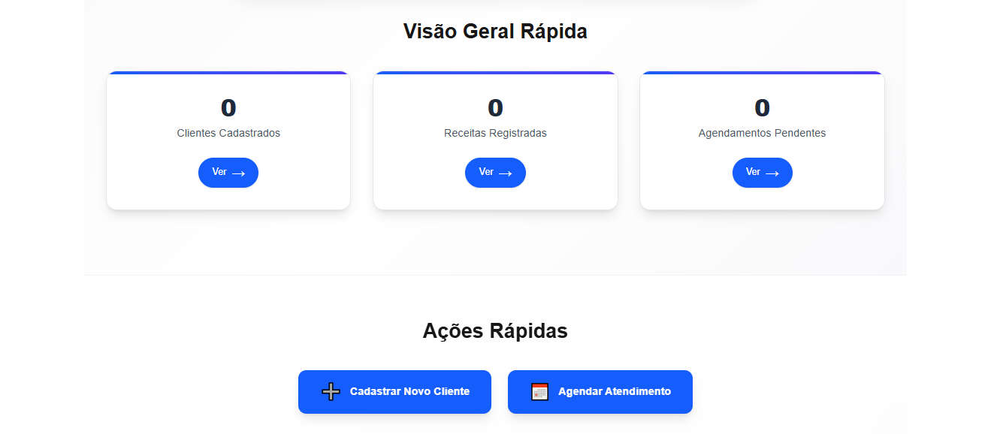
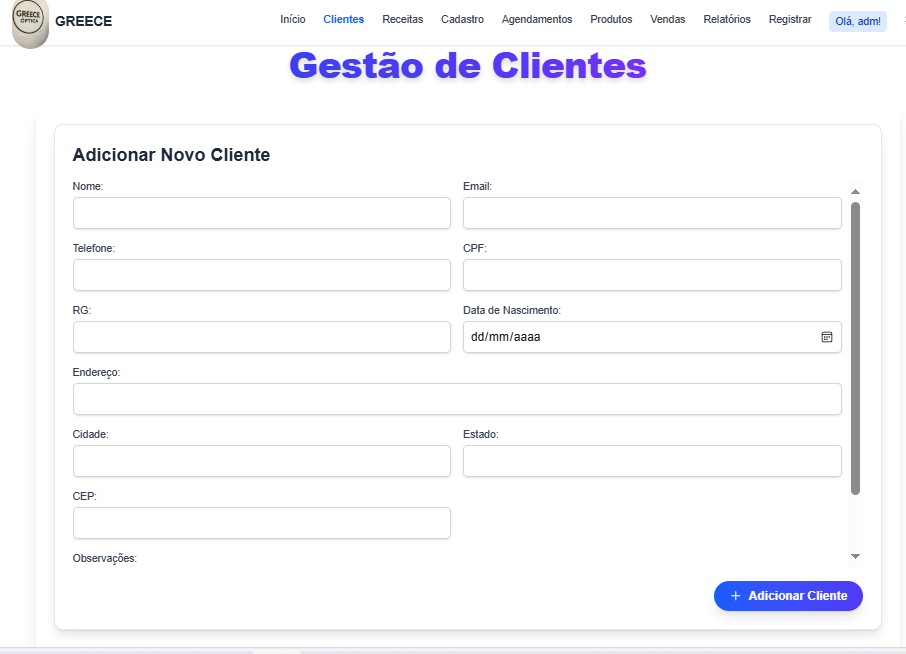
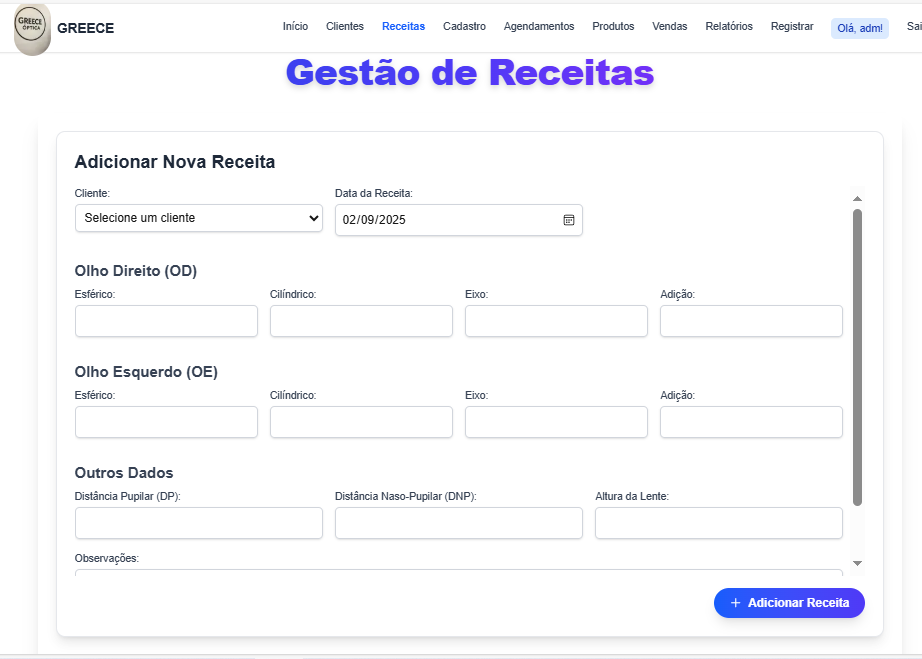
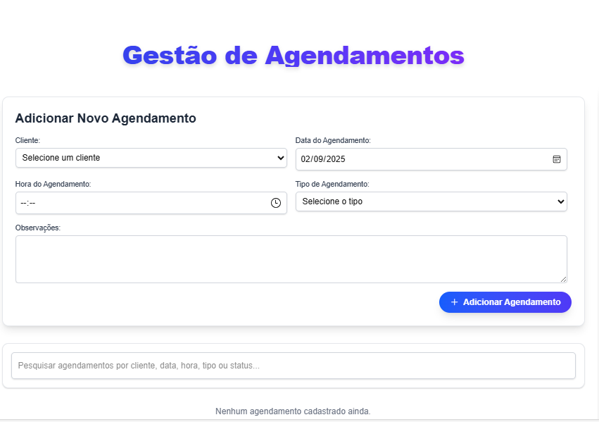
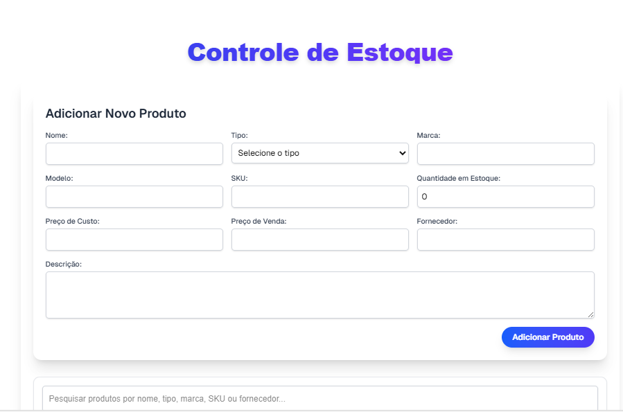
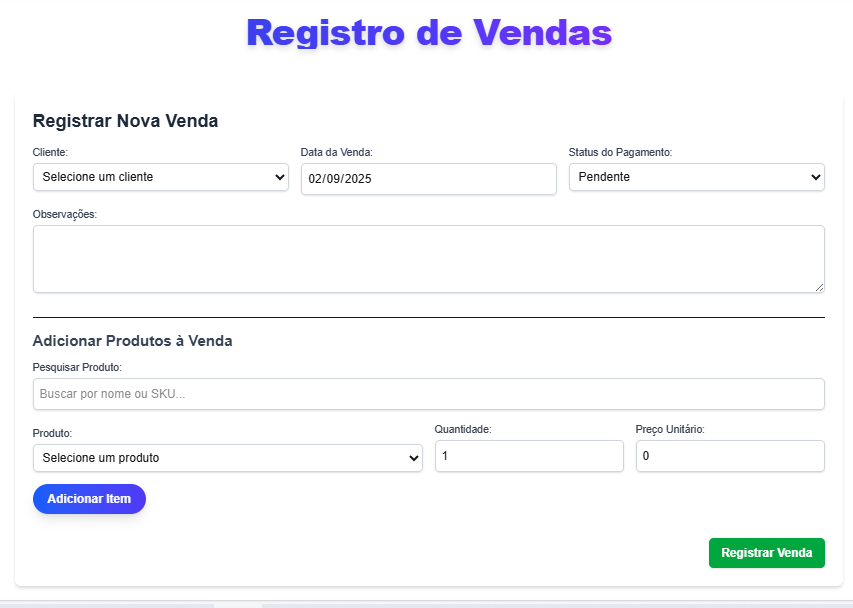
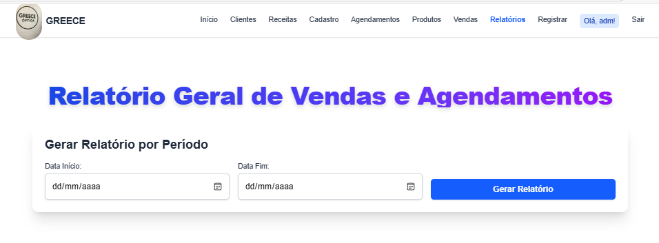
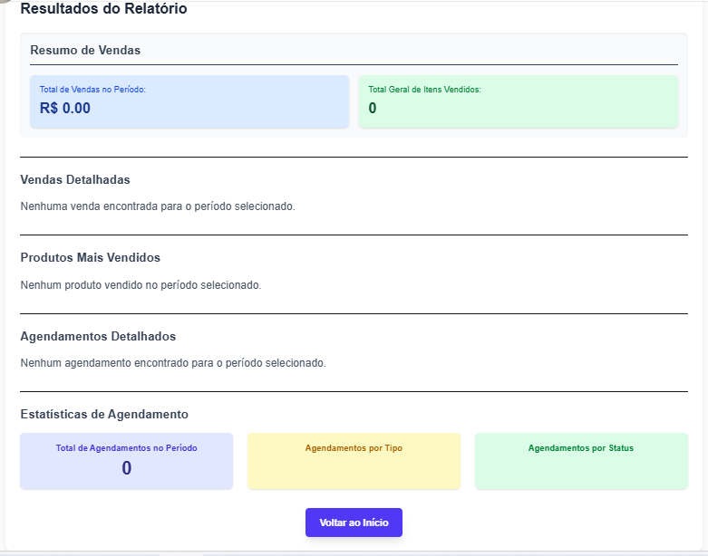
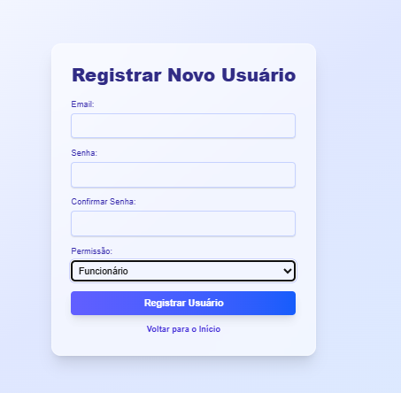
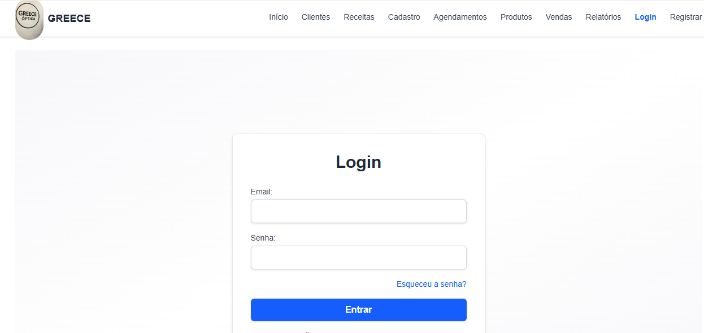
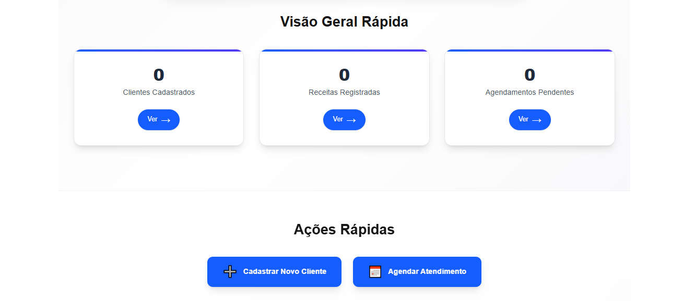
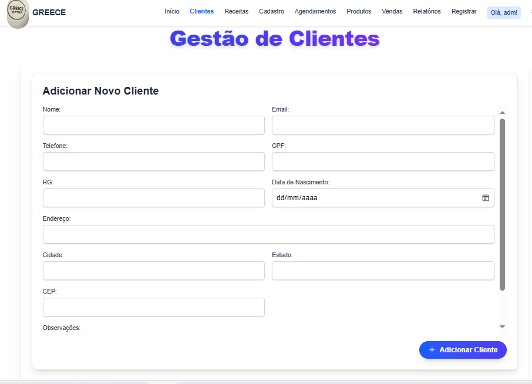
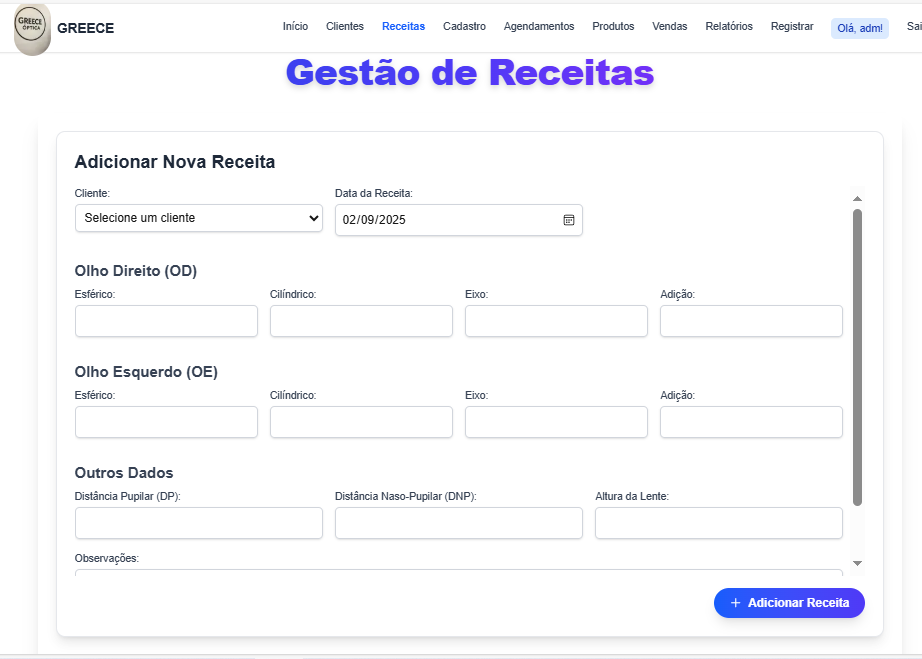
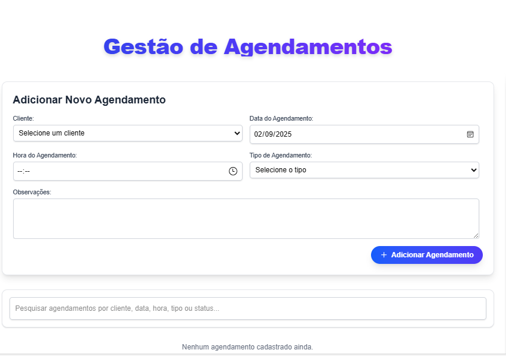
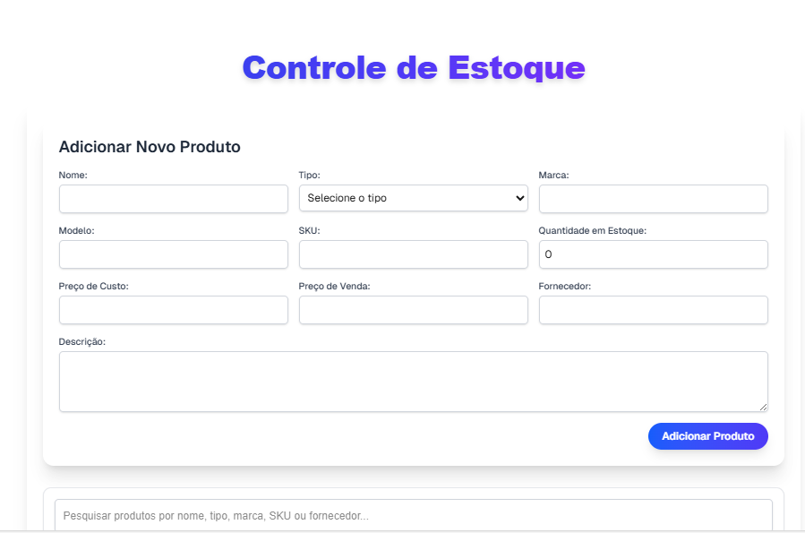
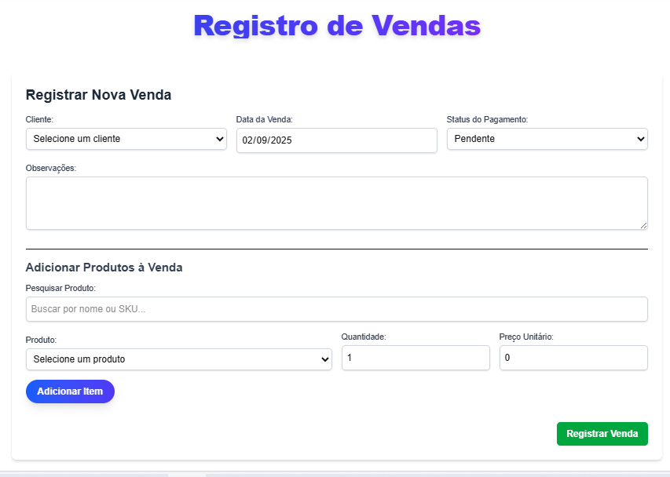
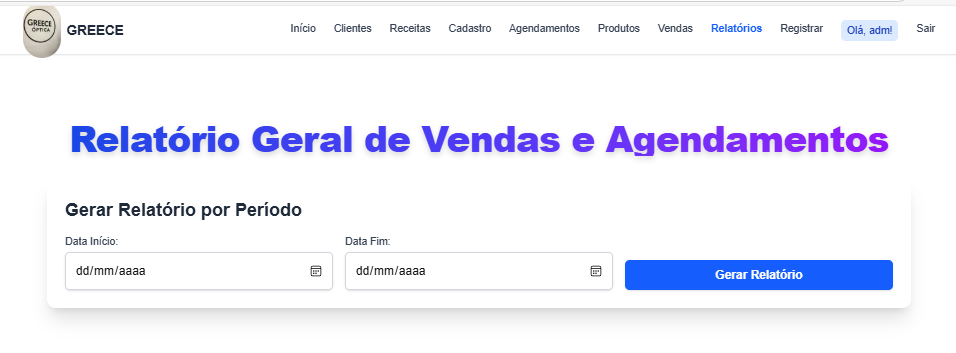
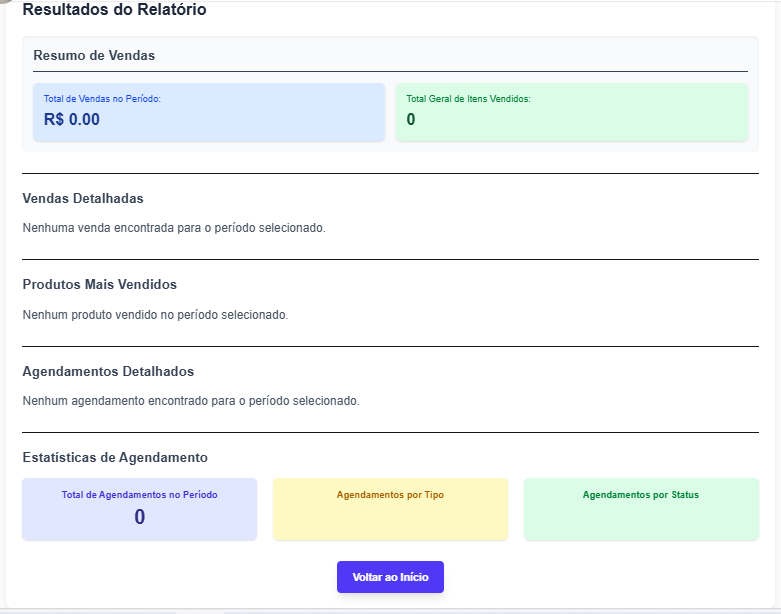
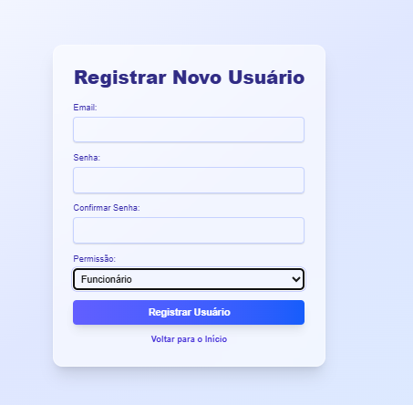
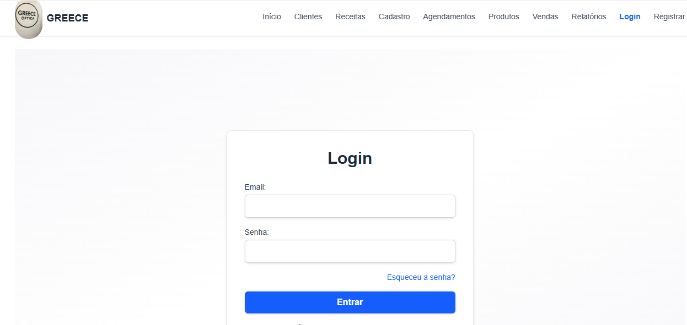
O Desafio
Este projeto nasceu da necessidade de modernizar a gestão de uma ótica, substituindo processos manuais e ineficientes. O desafio era criar um sistema que não apenas armazenasse dados, mas que fosse uma ferramenta de trabalho diária, fácil de usar e acessível de qualquer dispositivo.
A Solução Davilla
A solução foi um PWA de Gestão, onde desenvolvi um PDV (Ponto de Venda) intuitivo para registrar vendas rapidamente, com atualização automática do estoque e validações de segurança. O sistema oferece uma visão 360º de cada cliente, conectando receitas, agendamentos e histórico de compras. O resultado é uma aplicação que simplifica o fluxo de trabalho, aumenta a eficiência operacional e oferece uma experiência de usuário profissional e coesa.
Resultados e Impacto
- Aumento da Eficiência Operacional: Redução do tempo de registro de venda e de cadastro de cliente em 70%, eliminando a necessidade de anotações manuais e duplicação de dados.
- Melhora na Gestão de Dados: Precisão de 100% no controle de estoque, com atualização em tempo real a cada venda. Isso resultou na redução de 30% em perdas por falta de estoque e na eliminação de vendas de produtos indisponíveis.
- Análise de Negócio e Tomada de Decisão: Disponibilização de relatórios consolidados em menos de 1 minuto, contra um processo manual que levava horas. Os relatórios fornecem dados precisos sobre vendas por período e os produtos mais vendidos.
Tecnologias Utilizadas
Pronto para Transformar sua Ideia em Realidade?
Entre em contato para uma consultoria estratégica gratuita.
Falar com um Especialista